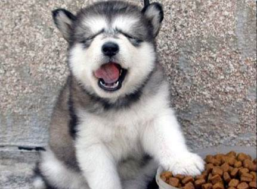

| 网站首页 | 狗狗介绍 | 狗狗照片 | 狗狗种类 | 狗狗食量 | 狗狗饲养 | 加入我们 | 登录/注册 |
 |
| 网站栏目 | 狗狗食量 | ||||||
|
怎么样控制狗狗的食量
对于家里饲养狗狗的宠友们，如何控制好狗狗的饭量是个比较重要的问题。因为如果不控制狗狗的饭量，狗狗就会吃得太多，造成狗狗生病。但是，很多养狗狗的人都知道，要空盒子狗狗的饭量和饮食是一件很难做到的事情 肥胖的狗狗：有些狗狗的品种天生就容易发胖，比如巴哥、斗牛、京吧等等，所以他们要比其它的犬种在喂养的时候更注意一下它们的饭量。 2 绝育的狗狗：做了绝育的狗狗很容易发胖，而且食欲也很好，为了减少因为肥胖引起的其它疾病，我们要在狗狗做了绝育手术伤口恢复完开始，就给狗狗限制饭量。 3 肥胖的狗狗：有些狗狗的品种天生就容易发胖，比如巴哥、斗牛、京吧等等，所以他们要比其它的犬种在喂养的时候更注意一下它们的饭量。 4 年老的狗狗：年老的狗狗一来消化能力差了，二来许多老年疾病都会因为食物中含有太多的蛋白质而引起病情的恶化。不过还好的就是，狗狗进入老年食欲也会下降，所以对于年老的狗狗控制食量似乎倒不是特别难。 5 幼年的狗狗：在生长期的幼犬吃东西是十分疯狂的，如果不适当的控制喂给量，狗狗很容易撑着，所以这个时候控制狗狗的食量是必须的。 |
| Copyriight@2006-2016 QIANNIANZHILIANcom, ALL rights reserved. |